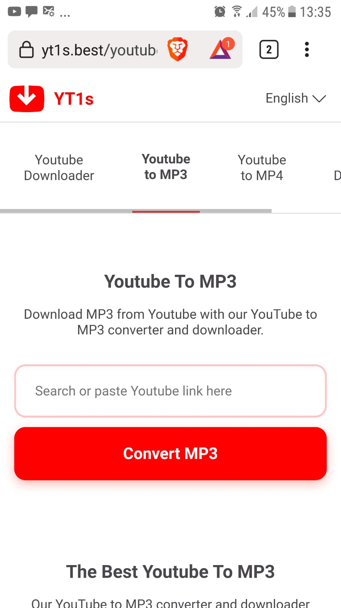
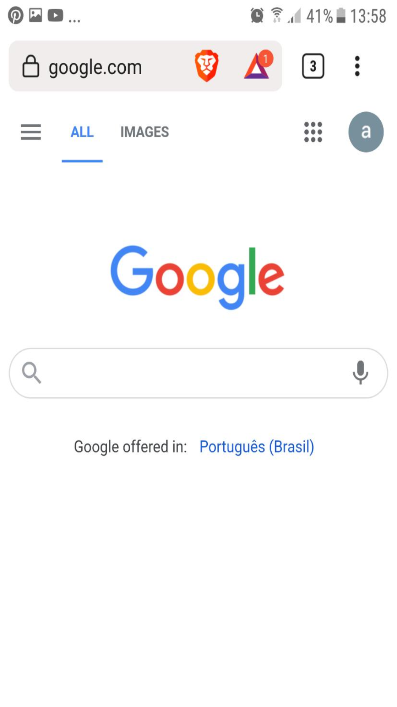

Visual Hierarchy
netflix.com
According to the Interaction Design Foundation website the definition of Visual Hierarchy is "the principle of arranging elements to show their order of importance."
Netflix's page does this very usil using the font size a position of its texts. when you look to ther page, the first thing that captures your eyes is the phrase "Unlimited movies, TV shows and more." which gives the user a reason to sign their service, following the human sight natural flow there are another texts with another advantages of the streaming service.
Hick's Law
yt1s.best/youtube-to-mp3/en41

According to the Laws of UX website, the Hick's laws states that "The time it takes to make a decision increases with the number and complexity of choices" and one of its takeaways is to "Minimize choices when response times are critical to increase decision time."
YT1 is a website where you can download a YouTube video in a variety of formats using its url. Instead of giving a lot of complicated settings for the download, YT1 only exposes two very intuitive choices to the user: the file format on the superior tabs and the url in a big form with a bright red download button. Making thus the decision quick and simple.
Fitt's Law
google.com

According to the Laws of UX website, the Fitt's Law says that "The time to acquire a target is a function of the distance to and size of the target", or n other words, the smaller and farest a target is, the hardest is to the hit it.
This applies to UX specially when we are talking about buttons and other touchable/clickable features.
Google's website uses this principle very well, since its type file is not only centered verticall, but also extends for almost the whole screen width, making it hard to missclick.